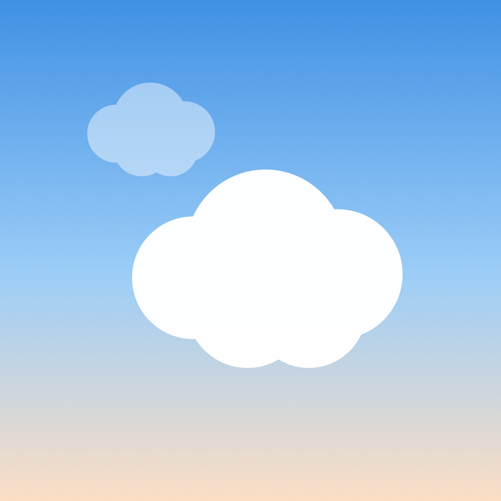
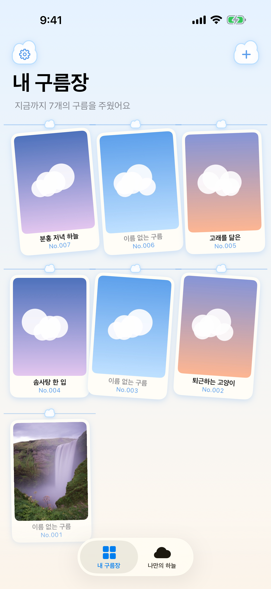
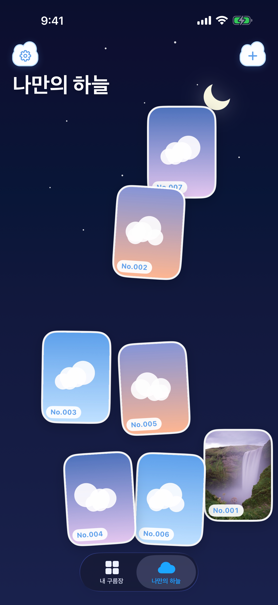
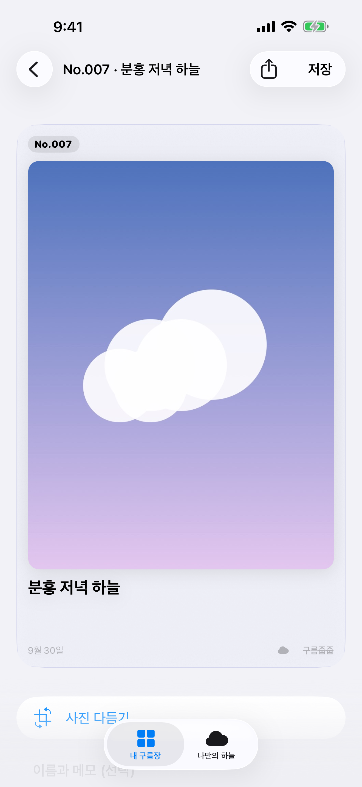
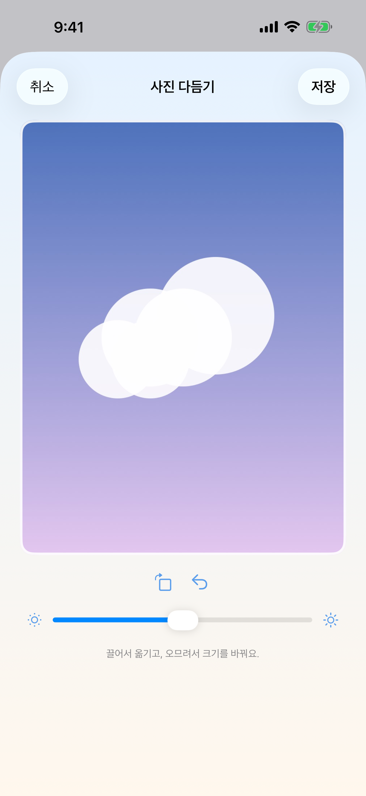

구름줍줍
오늘의 하늘에서, 구름 하나 주워요.




지원
하늘을 올려다보다 마음에 드는 구름을 만나면 찍어서 이름을 붙여요. 모은 구름은 액자처럼 걸린 내 구름장에 쌓이고, 나만의 하늘에서는 지금 시각의 하늘 위로 떠올라요. 원하는 자리에 옮기고 기울여 나만의 하늘을 만들 수 있어요.
문의
cloov2026@gmail.com
버그 제보 시 기기 모델과 iOS 버전을 함께 보내 주시면 빠르게 확인할 수 있습니다.
자주 묻는 질문
- 모은 구름은 어디에 저장되나요? 기기 안에만 저장됩니다. 계정도 서버도 없습니다. 앱을 삭제하면 구름도 함께 사라지니, 소중한 사진은 공유 버튼으로 따로 저장해 두세요.
- 알림은 어떤 건가요? 두 가지입니다. 구름을 볼 수 있는 시간대 중 하루 한 번 무작위로 오는 랜덤 알림, 그리고 일몰 15분 전에 오는 노을 알림입니다. 설정에서 각각 켜고 끌 수 있어요.
- 위치는 왜 필요한가요? 노을 알림을 켤 때만 한 번 묻습니다. 일몰 시각을 계산하는 데만 쓰고, 약 1km 단위로 뭉뚱그려 기기에 보관하며 밖으로 보내지 않습니다. 거부해도 노을 알림만 못 쓰고 나머지는 그대로 동작합니다.
- 앨범에 있는 사진도 넣을 수 있나요? 네. 구름 줍기 버튼을 길게 누르면 앨범에서 가져올 수 있고, 가져온 사진은 먼저 다듬기 화면에서 구도를 맞춘 뒤 카드가 됩니다.
- 사진을 다듬으면 원본이 바뀌나요? 아닙니다. 자르기·회전·밝기는 따로 기록되고 원본은 그대로 남아, 언제든 처음으로 되돌릴 수 있습니다.
- 결제나 광고가 있나요? 없습니다. 인터넷 연결도 필요 없습니다.